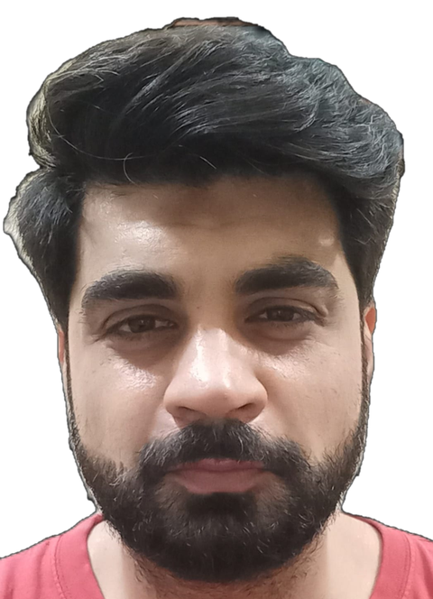
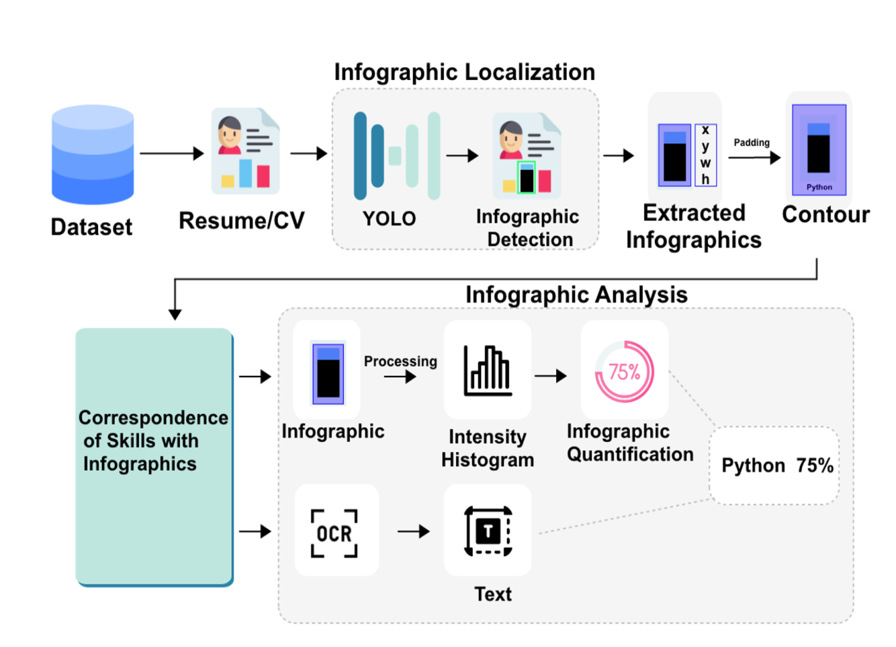
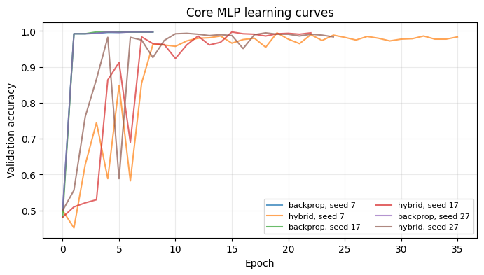
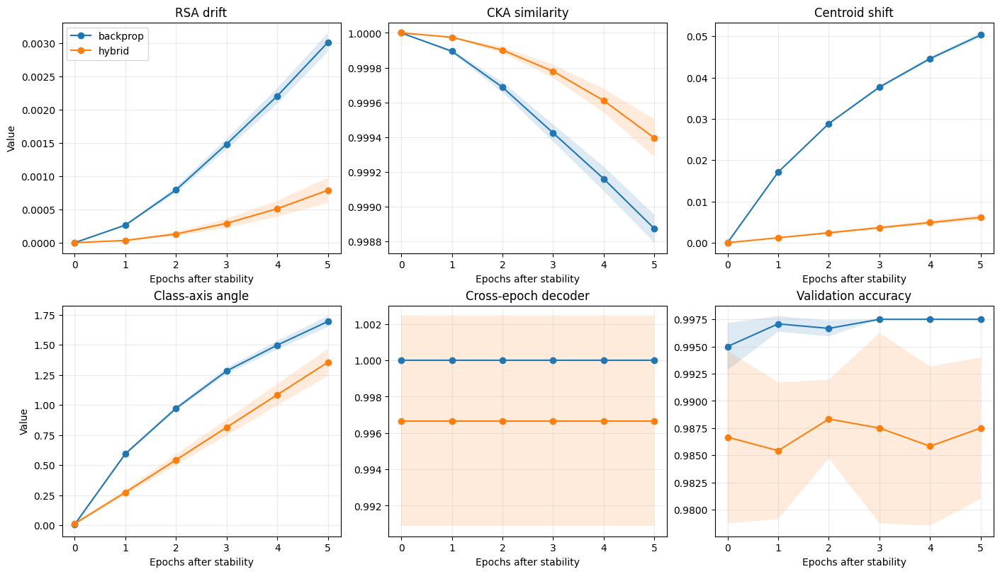
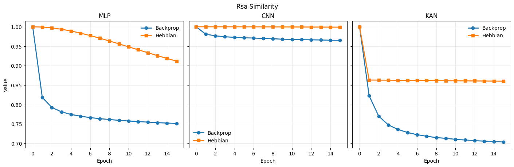
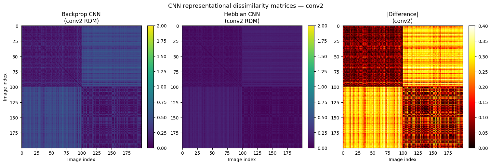

I came to AI through software engineering, and stayed for the question of how intelligence actually works. My work spans deep learning, RLHF, chain of thought evaluation, and behavioral analysis of large language models, always circling back to what a model's internal representations reveal about its behavior. I am seeking doctoral training to turn that question into a sustained research program in explainable, brain inspired AI.
Thesis: Localizing and Analyzing the Infographics in Documents Using Deep Learning
Final year project: IoT based home automation system for remote control of lights, fans, and door locks via a mobile app connected to an embedded circuit
Resumes increasingly use infographics, bar meters, circular progress rings, icon scales, to communicate skill levels instead of prose. My MSc thesis built a pipeline to automatically find those infographics inside a document, tie each one to its associated skill label, and convert its visual fill level into a number, treating the resume as a visual scene rather than a block of text.

The thesis conclusion proposed this as a baseline for a more brain inspired successor, incorporating models of human visual attention such as saliency mapping and eye tracking style priors, so infographic interpretation looks less like template matching and more like how a person actually scans a document. That's the thread that pulled me toward NeuroAI.
Published at IMCOM 2023 · under review at IJDAR, full citations under Publications.
Group project comparing how hidden layer representations evolve under backprop versus a hybrid Hebbian and gradient learning rule, on binary MNIST classification (digits 0 vs. 1), across three architectures: MLP, CNN and KAN.
The core comparison lives in the MLP, repeated across three random seeds. Within each seed, backprop and the hybrid rule start from identical initial weights, so any difference in representations traces back to the learning rule, not initialization.
Both models are trained on the same binary task until performance stabilizes, confirmed stable across a three epoch window, then tracked for five more epochs of continued training. No new task, no injected noise.

Once accuracy stabilizes, training continues on the same task, and we track how hidden layer geometry moves. We call this post stability representational change and treat it operationally as drift: the representations shift while accuracy and class information stay constant. This is not spontaneous biological drift. It is a measured consequence of continued training under a fixed task.
Drift is quantified four ways, RSA, CKA, centroid movement, and class axis geometry, plus a decoder trained on held out images at the stable epoch and retested on separate images from later epochs, to confirm class information survives the drift.

Both learning rules preserve task information throughout. But backprop shows a small, consistently greater amount of post stability drift than the hybrid rule, across all three metrics and all three seeds.
CNN and KAN runs used the same two learning rules but weren't repeated across seeds or controlled as tightly as the MLP, so they're exploratory checks, not part of the main conclusion. Across all three architectures, backprop and Hebbian RSA similarity degrades over training, most sharply in the MLP and more gradually in the CNN and KAN.


Urdu: native · English: proficient (C1/C2)
IELTS Academic: Band 6.5 (May 2025)